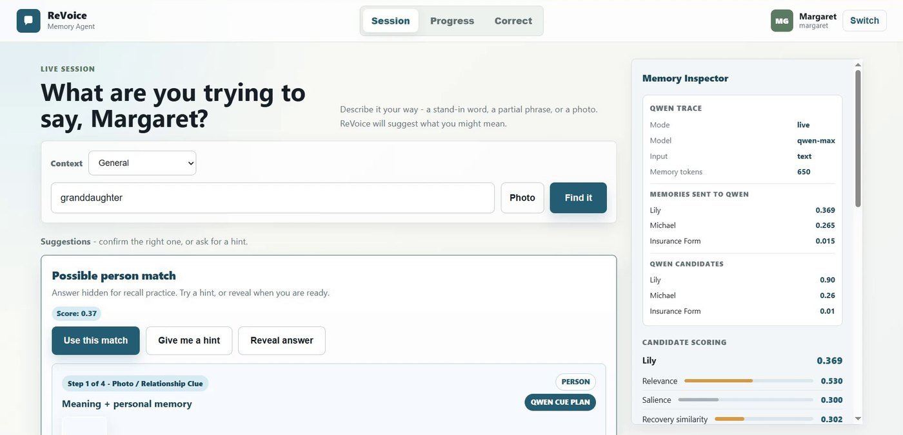
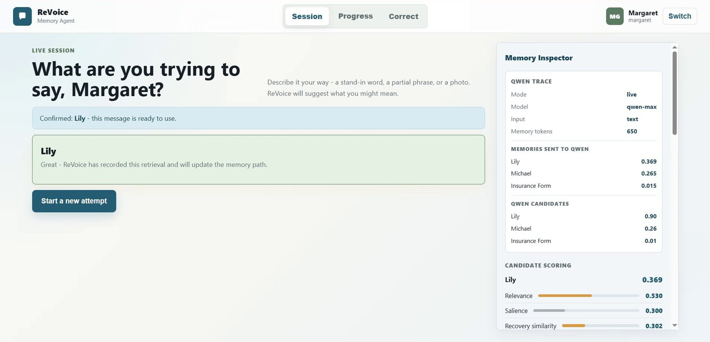
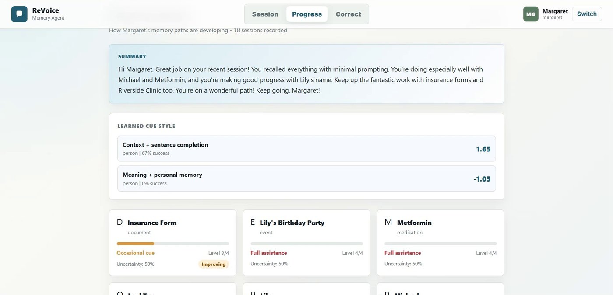

ReVoice: Qwen-Powered Adaptive Memory Agent
CodeGlobal AI Hackathon with Qwen Cloud Track 1: MemoryAgent Team of 2 · with Laiba Jul 2026
ReVoice helps people with word-finding difficulty, as in aphasia or dementia, who know what they mean but can't retrieve the exact word. Instead of only storing facts, it stores the recovery path: which cues helped this person recover this word before, which failed, and how much help they needed. Over many sessions it hides the answer to protect practice, generates safe personalised hints with Qwen, learns which cue styles work, and gradually offers less help as recall improves.
ReVoice doesn't just remember what someone said. It remembers what helped them say it.

1) Core Flow
- Margaret types a stand-in word: "granddaughter".
- ReVoice ranks her memories and packs only the most relevant ones into Qwen's context.
- Qwen proposes candidate meanings. The UI hides the exact answers (e.g. "Possible person match") so hints don't spoil recall.
- Qwen builds an adaptive cue plan from relationship context, session context and her learned cue preferences.
- Deterministic safety code removes the target word from every hint before the final reveal.
- The outcome of each cue updates memory: the assistance level for that concept and her cue-style preferences for that category, so even newly added people inherit what worked before.
2) Qwen Cloud, Tools & MCP
- qwen-max handles candidate reasoning and non-clinical progress summaries. qwen-vl-max handles reasoning grounded in an uploaded photo. qwen-turbo generates the cue banks quickly and cheaply.
- Agentic tool calling: when unsure, qwen-max calls a custom
inspect_conceptskill to fetch relationship context (e.g. grandchild_of Michael) before committing to a candidate. It can do this for up to three rounds before returning its JSON answer.
A native MCP server (streamable HTTP, JSON-RPC 2.0) exposes the memory to any MCP client:
search_memories: search a user's active conceptsget_concept_details: a concept's detail, relationships and ability stateget_cue_preferences: learned cue-strategy scoresget_user_progress: ability levels for every concept
3) Memory Retrieval: Recovery-Path Similarity Score
- Relevance gate: concepts with zero semantic relevance to the input get no boost from their history, so a well-practised document can never outrank the relevant person.
- Personal cues: stored relationships expand into the stand-in words people actually use ("granddaughter", "grand daughter", "grandchild") without hard-coding.
- Adaptive weighting: independent recall counts for more than a full reveal, and recent episodes count for more than older ones.
- Category vocabulary from real datasets: derived from Princeton WordNet hyponym chains, filtered by word frequency (wordfreq).
4) Memory-Agent Behaviours
| Persistent memory | Users, concepts, sessions, attempts, cue events, ability states, preferences, corrections and audits stored across sessions |
| Learns from experience | Successful and failed cues update the help level for each concept and the cue preferences for each user and category |
| Forgetting & correction | Corrected concepts are superseded without deleting history. Uncertainty grows after gaps of more than 7 days |
| Consent gating | Caregiver-only memories (e.g. medication) never surface in a regular user session, enforced deterministically before ranking |
| Human checkpoint | Every candidate needs explicit confirmation before the ability state changes |
| Transparency | A live Memory Inspector shows the Qwen trace, score breakdown, cue ladder, preferences and latency |


The cue ladder draws on word-retrieval strategies from aphasia and dementia care: semantic feature cues, sentence completion, phonological and orthographic cues, visual and autobiographical cues, and waiting before revealing. ReVoice is an assistive tool, not a diagnostic or treatment tool.
5) Evaluation
| Suite | ReVoice | Memoryless baseline | Transcript-RAG baseline |
|---|---|---|---|
| Core memory-agent properties (20 cases: persistence, personal cues, consent, correction, context budget, transfer) | 20/20 | 3/20 | 1/20 |
| Philadelphia Naming Test semantic error types (12 cases: circumlocutions, coordinate and kinship substitutions…) | 12/12 | 4/12 | – |
The memoryless baseline's PNT passes are alphabetical accidents, not semantic matches. In addition, 24 backend unit tests pass and the frontend production build passes.
6) Tech Stack & Deployment
React + Vite + TypeScript frontend · FastAPI backend · SQLite / SQLAlchemy memory store · Qwen Cloud through DashScope's OpenAI-compatible API · MCP server · deployed on Alibaba Cloud Function Compute as a custom container, with Container Registry and optional OSS for media.